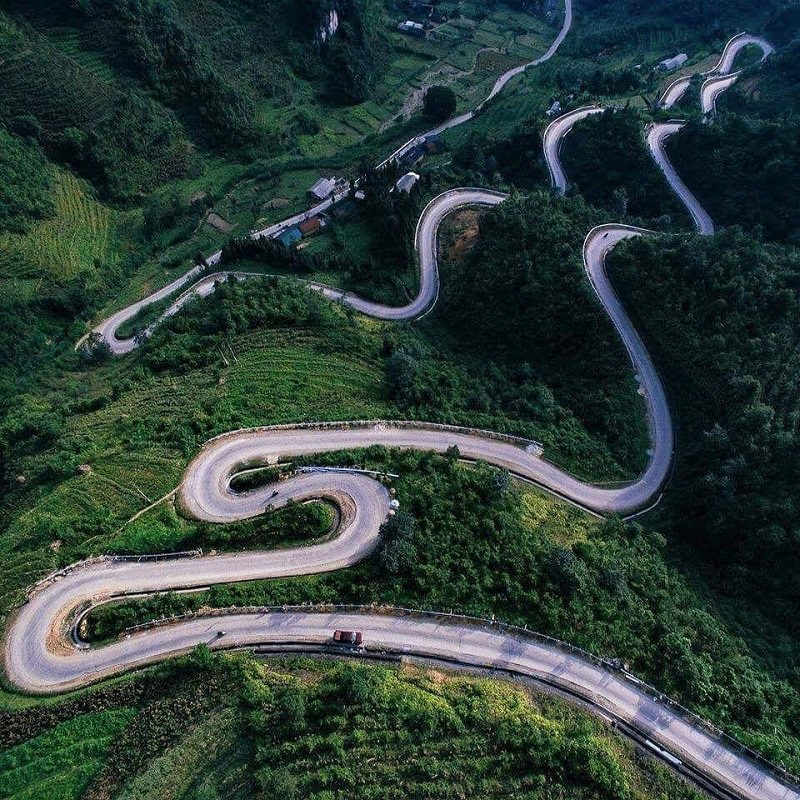
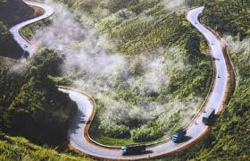
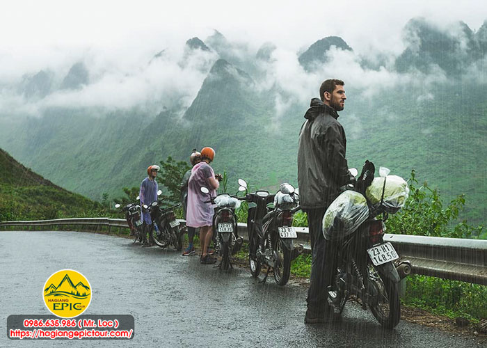
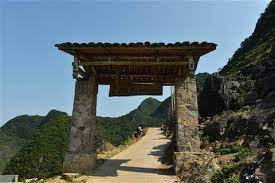

Đèo Mã Pí Lèng - "Sống mũi con ngựa" trong tiếng H'Mông, được mệnh danh là một trong tứ đại đỉnh đèo Việt Nam. Với độ cao 1.500m so với mực nước biển, đèo Mã Pí Lèng mang đến trải nghiệm chinh phục đầy thử thách cùng cảnh sắc núi non hùng vĩ bậc nhất miền Bắc.
1. Giới thiệu về đèo Mã Pí Lèng
Đèo Mã Pí Lèng nằm trên con đường Hạnh Phúc nối liền thành phố Hà Giang với các huyện Đồng Văn, Mèo Vạc. Với chiều dài khoảng 20km, đèo được xây dựng trong 6 năm (1959-1965) bằng sức lao động thủ công của hàng vạn thanh niên xung phong.
Đứng từ đỉnh đèo, bạn có thể chiêm ngưỡng toàn cảnh sông Nho Quế uốn lượn như dải lụa mềm mại giữa núi non trùng điệp. Đây được coi là "Vịnh Hạ Long trên cạn" của vùng cao nguyên đá.
2. Hành trình chinh phục
Xuất phát từ Hà Giang
• 6h00: Khởi hành từ thành phố Hà Giang, di chuyển theo QL4C về hướng Đồng Văn (khoảng 150km)
• 8h30: Dừng chân tại Quản Bạ, tham quan Cổng trời Quản Bạ và núi Đôi
• 10h00: Tiếp tục hành trình qua Yên Minh, dừng chân ăn trưa tại thị trấn
Chinh phục đèo Mã Pí Lèng
• 13h00: Bắt đầu leo đèo từ phía Đồng Văn
• 14h30: Đạt đỉnh đèo, chụp ảnh tại cột mốc và tượng đài kỷ niệm
• 15h00: Xuống đèo về phía Mèo Vạc, ghé thăm điểm check-in nổi tiếng "Cổng trời Mã Pí Lèng"
• 16h30: Tham quan hang Rồng và ngắm toàn cảnh sông Nho Quế từ đỉnh Tu Sản
3. Kinh nghiệm cần biết
Phương tiện di chuyển
• Xe máy: Lựa chọn phổ biến nhất, nên dùng xe số hoặc xe tay ga có động cơ từ 125cc trở lên
• Ô tô: Chỉ dành cho tài xế có kinh nghiệm, đường đèo nhiều khúc cua nguy hiểm
• Tour du lịch: Các công ty lữ hành tổ chức tour Hà Giang 3N2Đ thường có lịch trình qua Mã Pí Lèng
Thời điểm lý tưởng
• Tháng 10-12: Mùa hoa tam giác mạch, cảnh sắc tuyệt đẹp
• Tháng 1-3: Mùa xuân với lễ hội của đồng bào dân tộc
• Tránh đi vào tháng 6-8 do mưa nhiều, đường trơn trượt
4. Những điểm check-in không thể bỏ qua
• Cổng trời Mã Pí Lèng: Điểm chụp ảnh đẹp nhất với góc nhìn toàn cảnh
• Đèo Thẩm Mã: Đoạn đèo dốc đứng nhất, thử thách cho dân phượt
• Tu Sản: Nơi có view ngắm sông Nho Quế đẹp nhất
• Làng Pả Vi: Ngôi làng của người H'Mông nằm cheo leo trên núi
• Đèo Mã Pí Lèng Viewpoint: Quán cà phê với view đỉnh đèo tuyệt đẹp
5. Lưu ý an toàn
• Luôn đội mũ bảo hiểm đạt chuẩn, kiểm tra phanh xe trước khi xuống dốc
• Mang theo áo ấm dù là mùa hè, nhiệt độ trên đèo có thể xuống dưới 15°C
• Chuẩn bị thuốc say xe nếu bạn dễ bị say
• Không dừng đỗ xe ở khúc cua hẹp, chỉ dừng ở các bãi đỗ được chỉ định
• Nạp đầy nhiên liệu trước khi leo đèo vì không có trạm xăng trên đèo
Chinh phục đèo Mã Pí Lèng là trải nghiệm không thể bỏ qua với bất kỳ ai yêu thích du lịch khám phá. Con đường đèo ngoằn ngoèo giữa núi non hùng vĩ sẽ để lại trong bạn những kỷ niệm khó quên về vẻ đẹp của miền biên viễn Tổ quốc.